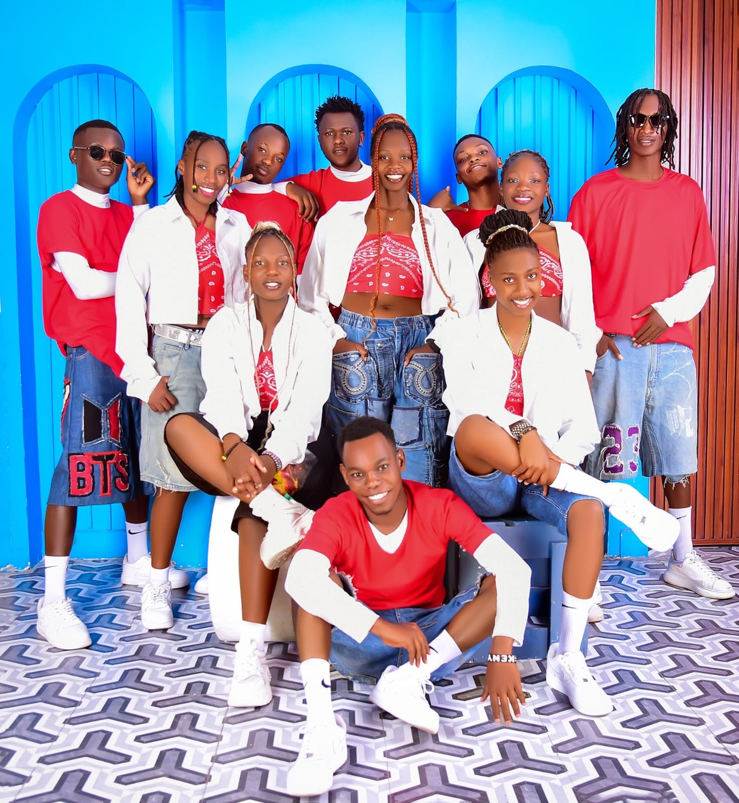
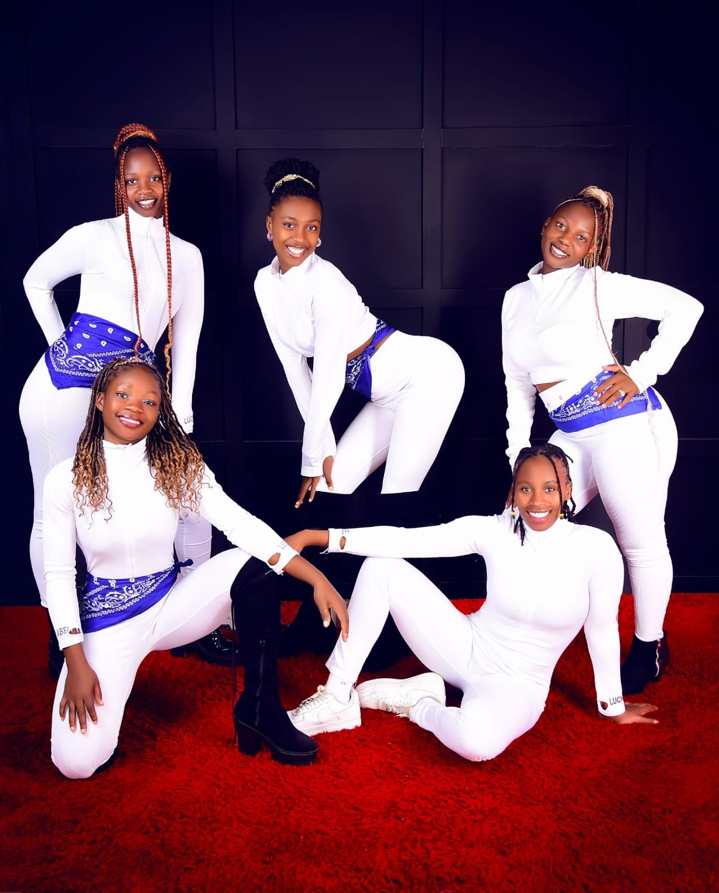
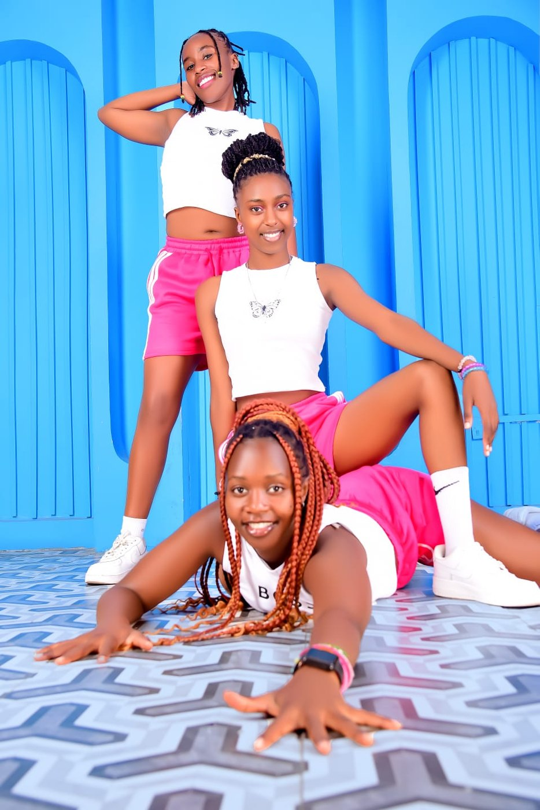
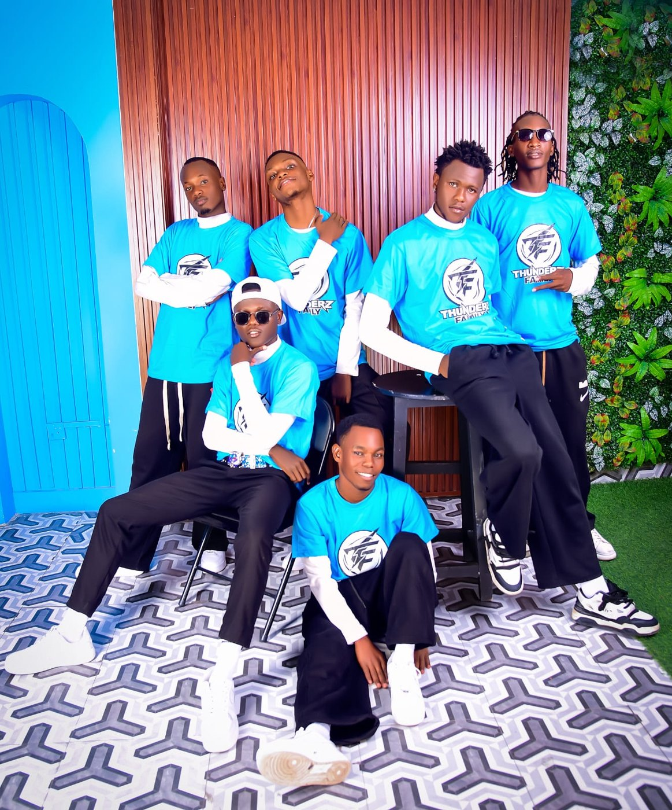
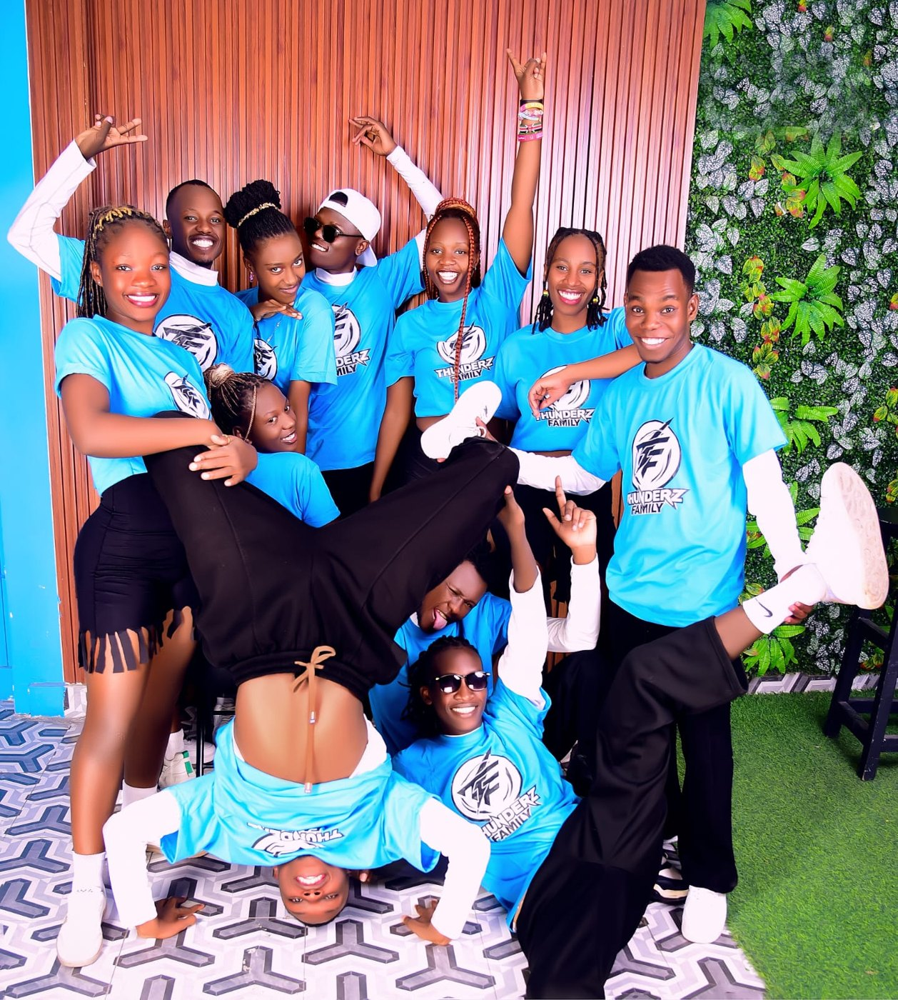

Anthropological movement design
We study human kinesiology, spatial psychology, and cultural rhythm patterns to create routines that resonate on a primal level. Choreography is not an arrangement of steps; it is the physical architecture of emotion.

Where street authenticity meets corporate precision.

Thunderz Family is not merely an organization. It is a sprawling, high-octane cultural institution founded on the pavement and refined for the world’s most demanding stages. We exist at the jagged intersection of raw street battle energy and meticulous corporate execution.
Every isolation we snap, every drop we engineer, and every narrative arc we choreograph is designed to shock the human nervous system. We have dismantled the traditional barriers of commercial dance, proving that street culture is not a passing trend. It is a permanent global superpower.
In the damp, dimly lit underground parking structures of the industrial sector, five visionary street dancers consolidated their crews. Fatigued by commercial casting directors stripping away the raw edge of street styles for pop videos, they formed the ‘Thunderz’ alliance. The early months were defined by grueling 10-hour cypher sessions, developing a hyper-aggressive, synchronized signature style that merged structural animation mechanics with explosive, unhinged Krump foundations.
As underground battle titles accumulated across the nation, the collective faced its first major evolution. Winning the National Street Dance Supremacy title by a unanimous judges’ vote, the crew caught the eye of avant-garde theater directors. This year marked their first foray into narrative-driven choreography, fusing urban street styles with contemporary staging elements, culminating in their first self-funded 30-minute short film, ‘Shock Doctrine,’ which went viral within the global community.
Thunderz Family officially expanded into a global collective, establishing audition pipelines across three continents. The crew was contracted to orchestrate the entire movement design and background tracking for the international ‘Neon Mythos’ stadium tour, performing live in front of over 1.2 million spectators cumulatively. This year saw the establishment of their permanent multi-studio training headquarters and the launch of the professional corporate booking agency arm.
Recognizing the power of cinematic digital production, the crew established an in-house media production house. Their conceptual short films, characterized by high-contrast anamorphic lighting, complex single-take camera tracking, and industrial electronic soundscapes, garnered over 15 million organic views. Simultaneously, individual principal dancers booked major roles as lead models and movement directors for global high-fashion luxury campaigns in Paris and Milan.
Now commanding a roster of over 30 elite Tier-1 professionals, Thunderz Family stands as an undisputed global powerhouse. Sweeping the 2026 World MegaCrew Championships with a historic, unprecedented perfect execution score, the family has solidified its status not just as an entertainment entity, but as a legendary institution setting the absolute vanguard for global movement design.



We study human kinesiology, spatial psychology, and cultural rhythm patterns to create routines that resonate on a primal level. Choreography is not an arrangement of steps; it is the physical architecture of emotion.
In our ranks, individualism feeds the collective. There are no background dancers in the Thunderz Family. Every single body on screen or on stage operates as a primary engine of kinetic force, meticulously calibrated to match the velocity and texture of the group.
We approach training with the technical precision of Olympic athletes. Dancers undergo rigorous weekly assessments analyzing timing accuracy, isolation control, explosive output parameters, and improvisational fluidity under high-stress conditions.
Artistic Director & Executive Founder
Marcus Vance is an internationally acclaimed creative director with a career spanning nearly two decades at the absolute pinnacle of urban street dance. Emerging from the underground Krump scene, Vance revolutionized commercial choreography by introducing brutalist staging principles and complex geometric formations to large-scale productions. He has served as the head consultant for premier television networks, orchestrated movement mechanics for elite automotive launch spectacles, and acts as a permanent premium adjudicator for the World Urban Dance Federation. His leadership ensures that the raw, uncompromising spirit of the underground remains deeply embedded in every commercial venture.
Chief Choreographer & Visual Design Director
A classical prodigy who transitioned into urban experimentation, Elena Rossi holds an advanced degree in Performance Art and Choreographic Theory. Her unique methodology combines the rigid spatial discipline of contemporary ballet with the syncopated, high-impact isolation techniques of new-style hip-hop. Rossi has conceptualized and directed award-winning music videos for streaming chart-toppers, transforming static sets into fluid, breathing organisms of motion. As Visual Design Director, she oversees the complete aesthetic ecology of the Thunderz brand, controlling lighting design, camera interaction formulas, and costuming integration.
Technical Master & Director of Applied Mechanics
Xavier Chen is recognized globally as one of the ultimate pioneers of mechanical animation, popping, and liquid illusion styles. Before entering the professional industry, Chen spent years breaking down individual muscle isolation physics, resulting in a performance style that appears to defy biological limitations. At Thunderz Family, he dictates the micro-timing and structural precision training of the crew. His specialized workshops are highly sought after by world-class athletic programs, animation studios tracking motion capture, and elite performing arts academies worldwide.